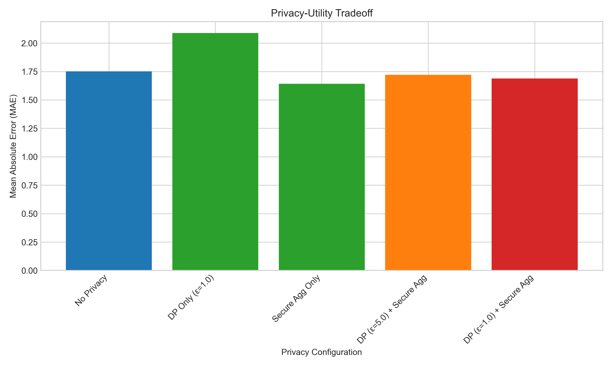
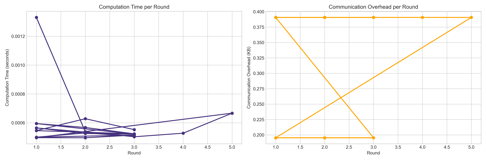

Privacy-Preserving Smart Grid Dashboard
Visualizing the performance and privacy tradeoffs in smart grid federated learning
Privacy-Utility Tradeoff

This chart shows how different privacy configurations affect model accuracy. Higher privacy typically results in lower utility (higher error).
Performance Metrics

These charts show computation time and communication overhead per round.
Privacy Budget
This chart shows how the privacy budget is spent over time with differential privacy.
Blockchain Integration
Model performance metrics recorded in the blockchain.
Time required to mine each block in the blockchain.